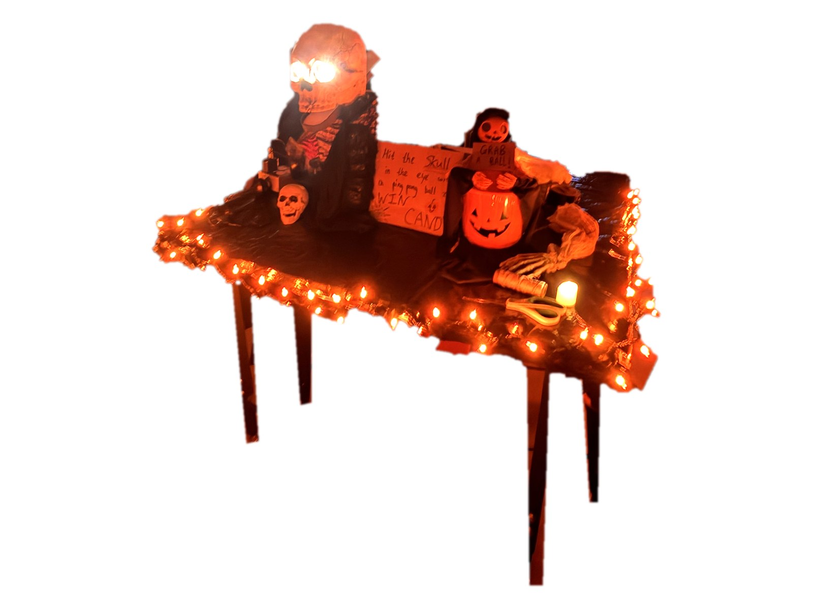
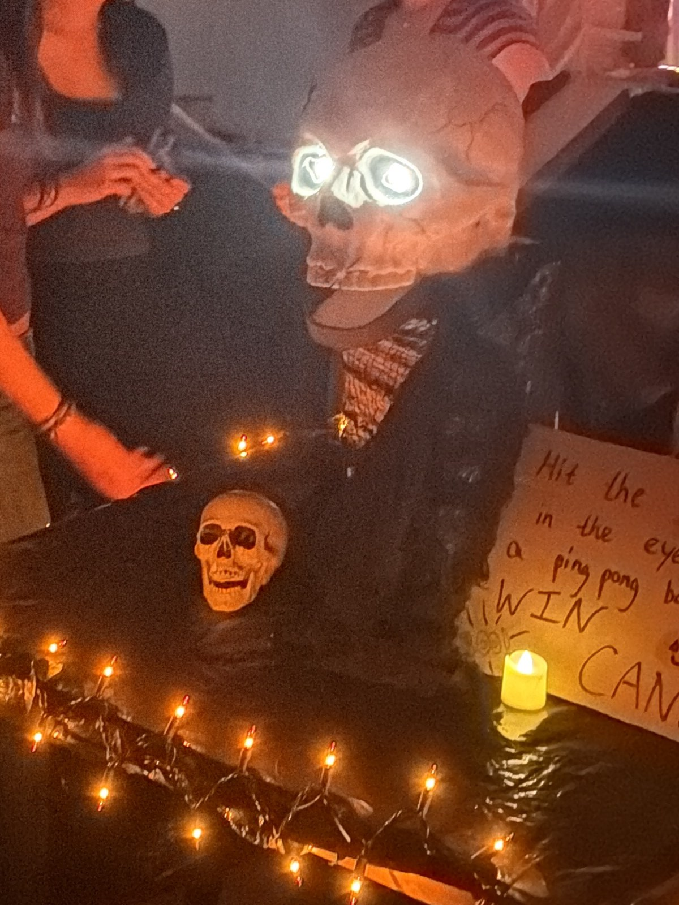
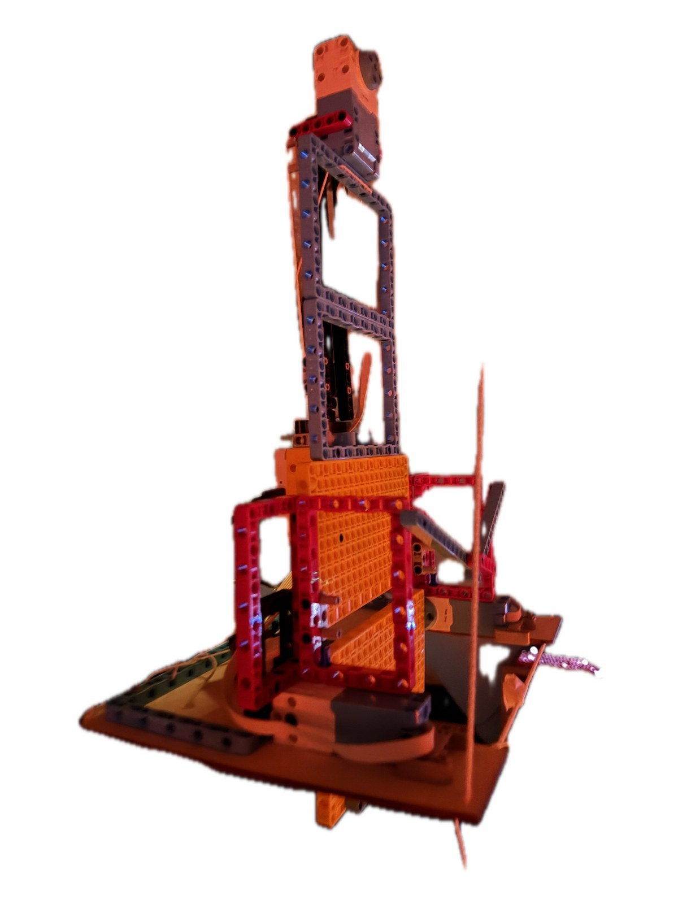
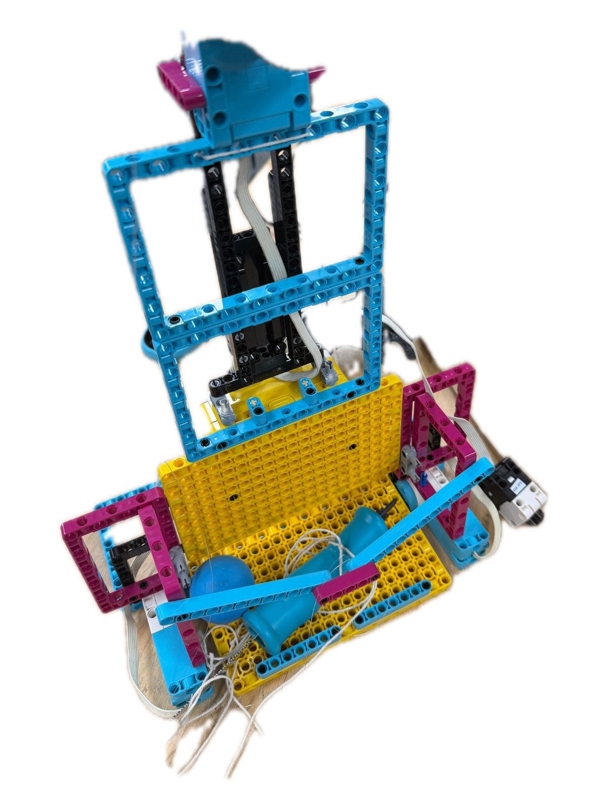
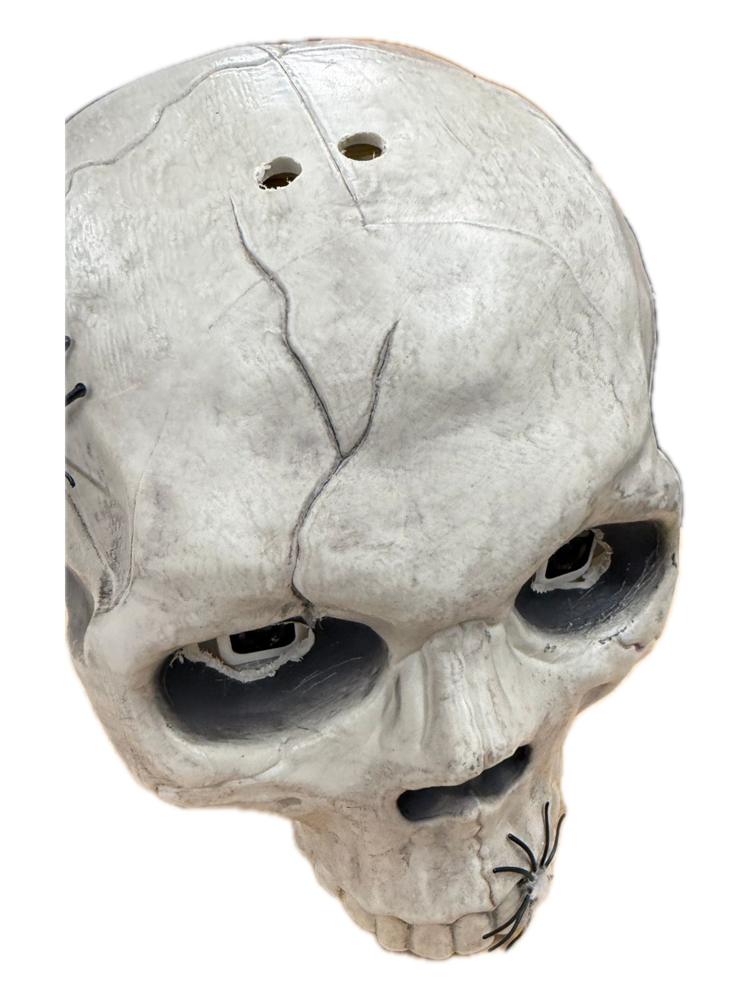

For the class haunted house, our team built a game: hit the skull in the eye with a ping-pong ball to win candy. A hit sets off a short show run by three LEGO SPIKE Prime hubs. Hub B (the skull) has a color sensor in each eye, on ports B and D. Hub C (the candy slide) has a motor on port A that pushes out the candy. Hub A (the dropper) hangs from the ceiling and grew out of the up-high drop robot from Activity 5: two medium motors on ports F and B swing the platforms that hold a knife on a string, and a large motor on port A at the top winds the string.
The hubs talk over Bluetooth using our professor’s spikecomm library (v1.2.0) in Beacon mode. Each hub keeps broadcasting two numbers, a state and a count, and listens to the other two. An event is a hub’s count going up by one: the skull’s count goes up when a show starts, and the dropper’s count goes up when it is finished and ready again. The first count heard from a hub is only remembered, so restarting a hub can’t set anything off. The dropper runs its whole timeline on its own clock from that one trigger, which keeps the Bluetooth messages to a minimum. Each hub’s screen shows a check mark when it hears both other hubs and an X when it is missing one.
The show goes like this. The skull checks both eyes about every 5 ms, and a single reading of any color on either sensor counts as a hit, because the ball only flashes past. Right away, the candy slide pushes one candy with one full anticlockwise turn, ending back where it started. Five seconds later, both platforms turn 90° at the same moment and the knife drops. Five seconds after that, the top motor pulls the knife back up 19.5 motor turns at 400° per second and holds it there. Two seconds later the platforms close, and the motor unwinds exactly as much string as it pulled, so the knife rests on the platforms again. The dropper then tells the skull it is ready, and the skull re-arms for the next throw. A show takes about 45 seconds. Hits during a show are ignored, and if the dropper never answers, the skull re-arms after 90 seconds anyway.
We also added buttons for testing and running the booth. Pressing LEFT on Hub C or Hub A starts a show without the ball, and pressing RIGHT on Hub C pushes one extra candy without starting a show. RIGHT on Hub A is an emergency stop for all three dropper motors, and pressing LEFT after a stop resets the dropper: the platforms close, the string unwinds back to its start, and the dropper waits for the next show.
We tuned the show by running it on the real hubs. The pull-up length changed several times, from 33.5 motor turns to 29, 26, 20 and 19, before we settled on 19.5, and we halved the pull and unwind speeds. The skull first reacted only to an azure ball, and we changed it to accept a ball of any color. Shows started by a real ball worked from both eyes.




# ===== Project 10 Haunted House: Hub A (Dropper) =====
# When the skull (Hub B) starts a show, this hub runs the dropper on its own clock:
# 5 s -> platforms drop -> 5 s -> pull the knife up 19.5 turns -> 2 s
# -> platforms close -> unwind (knife rests on the platforms again)
# Then it tells the skull it is ready for the next show.
# LEFT button: ask the skull to start a full show (for testing without the ball).
# RIGHT button: EMERGENCY STOP. All three motors stop and the dropper waits.
# Then LEFT resets it: the platforms close, the string unwinds back to where
# it started, and the dropper waits for the next show.
# Before starting: platforms closed, knife resting on them with slack in the string.
# Screen: check mark = hearing both other hubs, X = missing one (console says which).
# Start from the REPL / mpremote run, not the SPIKE App's Run button.
from spikecomm import Beacon, Scanner
from hub import port, button, light_matrix
import motor
import time
ME = "A" # this hub
OTHERS = ["B", "C"] # the hubs to listen to
LOST_MS = 1500 # nothing heard from a hub for this long = lost
# ----- Settings (tune these while testing) -----
RIGHT_PLATFORM = port.F # medium motor
LEFT_PLATFORM = port.B # medium motor
PULL_MOTOR = port.A # large motor at the top
RIGHT_DROP = 90 # degrees to drop: + = clockwise
LEFT_DROP = -90 # degrees to drop: - = anticlockwise
DROP_SPEED = 800 # degrees per second (fast, for the surprise)
CLOSE_SPEED = 300 # degrees per second (gentle, under the knife)
CLOSE_MS = 700 # time to let the platforms close before unwinding
PULL_SPEED = 400 # degrees per second: + = clockwise = pull up
PULL_TURNS = 19.5 # motor turns to pull up (360 degrees each)
RELEASE_SPEED = 525 # degrees per second to unwind (the large motor's max is 1050)
WAIT_BEFORE_DROP_MS = 5000 # after the skull sees the ball
WAIT_BEFORE_PULL_MS = 5000 # after the drop
WAIT_BEFORE_CLOSE_MS = 2000 # after the knife is pulled up
state = 0 # 0 = idle, 1 = running the dropper, 2 = test button asked the skull for a show
count = 0 # +1 every time the dropper finishes ("ready")
# latest["B"] = {"values": [state, count], "time": when it was heard}
latest = {}
for name in OTHERS:
latest[name] = {"values": None, "time": 0}
def make_listener(name):
"""Make a callback that saves what hub `name` broadcasts."""
def on_data(values):
if len(values) == 2: # [state, count]; ignore anything else
latest[name]["values"] = values
latest[name]["time"] = time.ticks_ms()
return on_data
me = Beacon("!" + ME)
for name in OTHERS:
Scanner("!" + name).listen(make_listener(name))
print("Hub", ME, "ready, listening for", OTHERS)
seen = {} # last count seen from each other hub
def new_event(name):
"""True when hub `name`'s count just went up. The first count heard from a
hub is only remembered, so starting or restarting a hub isn't an event."""
values = latest[name]["values"]
if values is None:
return False
is_new = name in seen and values[1] > seen[name]
seen[name] = values[1]
return is_new
screen = {"shown": None}
def show_link():
"""Check mark when both other hubs were heard lately, X when not."""
now = time.ticks_ms()
missing = []
for name in OTHERS:
if latest[name]["values"] is None or time.ticks_diff(now, latest[name]["time"]) > LOST_MS:
missing.append(name)
want = "lost" if missing else "ok"
if want != screen["shown"]:
if want == "ok":
light_matrix.show_image(light_matrix.IMAGE_YES)
print("Hearing", OTHERS)
else:
light_matrix.show_image(light_matrix.IMAGE_NO)
print("Not hearing", missing)
screen["shown"] = want
class EmergencyStop(Exception):
"""Raised when RIGHT is pressed, to leave the show right away."""
def check_emergency_stop():
"""RIGHT button: stop every dropper motor and leave the show."""
if button.pressed(button.RIGHT):
motor.stop(RIGHT_PLATFORM)
motor.stop(LEFT_PLATFORM)
motor.stop(PULL_MOTOR)
raise EmergencyStop
def wait_ms(ms):
"""Wait, keeping the screen up to date (Bluetooth keeps working too)."""
end = time.ticks_add(time.ticks_ms(), ms)
while time.ticks_diff(end, time.ticks_ms()) > 0:
check_emergency_stop()
show_link()
time.sleep_ms(20)
# Where each motor starts (platforms closed, string slack). LEFT after an
# emergency stop moves them back here.
home = {}
for p in (RIGHT_PLATFORM, LEFT_PLATFORM, PULL_MOTOR):
home[p] = motor.relative_position(p)
def reset_after_stop():
"""Stay stopped until LEFT is pressed, then move every motor back to
where it started: the platforms close first, then the string unwinds."""
light_matrix.show_image(light_matrix.IMAGE_NO)
screen["shown"] = None # redraw the link screen after the reset
print("EMERGENCY STOP: motors stopped. Press LEFT to reset")
while not button.pressed(button.LEFT):
time.sleep_ms(20)
print("Reset: closing the platforms")
turn = max(abs(motor.relative_position(RIGHT_PLATFORM) - home[RIGHT_PLATFORM]),
abs(motor.relative_position(LEFT_PLATFORM) - home[LEFT_PLATFORM]))
motor.run_to_relative_position(RIGHT_PLATFORM, home[RIGHT_PLATFORM], CLOSE_SPEED)
motor.run_to_relative_position(LEFT_PLATFORM, home[LEFT_PLATFORM], CLOSE_SPEED)
wait_ms(turn * 1000 // CLOSE_SPEED + 500) # + 0.5 s to speed up and stop
unwind = abs(motor.relative_position(PULL_MOTOR) - home[PULL_MOTOR])
print("Reset: unwinding", unwind, "degrees")
motor.run_to_relative_position(PULL_MOTOR, home[PULL_MOTOR], RELEASE_SPEED)
wait_ms(unwind * 1000 // RELEASE_SPEED + 500)
def run_show():
"""The dropper's part of the show, on its own clock."""
global state
print("Skull hit! Dropping in", WAIT_BEFORE_DROP_MS // 1000, "s")
state = 1
me.broadcast(state, count)
wait_ms(WAIT_BEFORE_DROP_MS)
print("Drop") # both platforms start together
motor.run_for_degrees(RIGHT_PLATFORM, RIGHT_DROP, DROP_SPEED)
motor.run_for_degrees(LEFT_PLATFORM, LEFT_DROP, DROP_SPEED)
wait_ms(WAIT_BEFORE_PULL_MS)
print("Pull up") # HOLD keeps the knife up afterwards
string_start = motor.relative_position(PULL_MOTOR)
pull_degrees = int(PULL_TURNS * 360)
motor.run_for_degrees(PULL_MOTOR, pull_degrees, PULL_SPEED, stop=motor.HOLD)
wait_ms(pull_degrees * 1000 // PULL_SPEED + 500 + WAIT_BEFORE_CLOSE_MS) # + 0.5 s to speed up and stop
print("Close platforms") # the opposite way of the drop
motor.run_for_degrees(RIGHT_PLATFORM, -RIGHT_DROP, CLOSE_SPEED)
motor.run_for_degrees(LEFT_PLATFORM, -LEFT_DROP, CLOSE_SPEED)
wait_ms(CLOSE_MS)
# Unwind exactly as much string as was pulled up,
# lowering the knife onto the platforms
pulled = abs(motor.relative_position(PULL_MOTOR) - string_start)
print("Unwind", pulled, "degrees")
motor.run_to_relative_position(PULL_MOTOR, string_start, RELEASE_SPEED)
wait_ms(pulled * 1000 // RELEASE_SPEED + 500) # + 0.5 s to speed up and stop
was_pressed = False
while True:
try:
check_emergency_stop()
# Test button: count each press once, not while it's held
pressed = bool(button.pressed(button.LEFT))
test_run = pressed and not was_pressed
was_pressed = pressed
if test_run and state == 0:
state = 2 # the skull starts the show, like a ball hit
print("Test button: asking the skull to start a show")
if new_event("B"):
run_show()
state = 0
count += 1
print("Ready for the next show")
except EmergencyStop:
while True:
try:
reset_after_stop()
break
except EmergencyStop: # RIGHT again during the reset: stop and wait again
pass
state = 0
count += 1 # tells the skull the dropper is ready again
was_pressed = True # the LEFT press that reset isn't a test show
print("Reset done. Ready for the next show")
me.broadcast(state, count) # does nothing if the data didn't change
show_link()
time.sleep_ms(20)
# ===== Project 10 Haunted House: Hub B (Skull) =====
# Watches the two color sensors in the skull's eyes. One reading of any color on
# either sensor (the ball only flashes past) starts a show: the count goes up,
# the slide (Hub C) pushes candy and the dropper (Hub A) runs its timeline.
# LEFT on Hub C or Hub A starts a show the same way (for testing without the ball).
# Hits are ignored until the dropper says it's ready again (or 90 s pass).
# Screen: check mark = hearing both other hubs, X = missing one (console says which).
# Start from the REPL / mpremote run, not the SPIKE App's Run button.
from spikecomm import Beacon, Scanner
from hub import port, light_matrix
import color
import color_sensor
import time
ME = "B" # this hub
OTHERS = ["A", "C"] # the hubs to listen to
LOST_MS = 1500 # nothing heard from a hub for this long = lost
# ----- Settings (tune these while testing) -----
EYES = {"B": port.B, "D": port.D} # color sensors, by port letter
NOT_A_BALL = [color.UNKNOWN] # readings that are NOT a hit (add e.g. color.BLACK if an empty eye reads it)
RESET_TIMEOUT_MS = 90000 # re-arm anyway if the dropper never says ready (a show takes about 45 s)
state = 0 # 0 = armed (waiting for the ball), 1 = show running
count = 0 # +1 every time a show starts
# latest["A"] = {"values": [state, count], "time": when it was heard}
latest = {}
for name in OTHERS:
latest[name] = {"values": None, "time": 0}
def make_listener(name):
"""Make a callback that saves what hub `name` broadcasts."""
def on_data(values):
if len(values) == 2: # [state, count]; ignore anything else
latest[name]["values"] = values
latest[name]["time"] = time.ticks_ms()
return on_data
me = Beacon("!" + ME)
for name in OTHERS:
Scanner("!" + name).listen(make_listener(name))
print("Hub", ME, "ready, listening for", OTHERS)
seen = {} # last count seen from each other hub
def new_event(name):
"""True when hub `name`'s count just went up. The first count heard from a
hub is only remembered, so starting or restarting a hub isn't an event."""
values = latest[name]["values"]
if values is None:
return False
is_new = name in seen and values[1] > seen[name]
seen[name] = values[1]
return is_new
screen = {"shown": None}
def show_link():
"""Check mark when both other hubs were heard lately, X when not."""
now = time.ticks_ms()
missing = []
for name in OTHERS:
if latest[name]["values"] is None or time.ticks_diff(now, latest[name]["time"]) > LOST_MS:
missing.append(name)
want = "lost" if missing else "ok"
if want != screen["shown"]:
if want == "ok":
light_matrix.show_image(light_matrix.IMAGE_YES)
print("Hearing", OTHERS)
else:
light_matrix.show_image(light_matrix.IMAGE_NO)
print("Not hearing", missing)
screen["shown"] = want
started = 0 # when the current show started
print("Armed: throw the ball!")
while True:
test_pressed = new_event("C") # check both every loop, so a press or
dropper_ready = new_event("A") # "ready" during a show isn't saved for later
if state == 0:
hit = None
if test_pressed:
hit = "test button on Hub C"
if latest["A"]["values"] and latest["A"]["values"][0] == 2:
hit = "test button on Hub A"
for letter in EYES:
seen_color = color_sensor.color(EYES[letter])
if seen_color not in NOT_A_BALL:
hit = "color " + str(seen_color) + " on sensor " + letter
if hit:
state = 1
count += 1
started = time.ticks_ms()
print("Show", count, "started:", hit)
elif dropper_ready:
state = 0
print("Dropper is ready. Armed: throw the ball!")
elif time.ticks_diff(time.ticks_ms(), started) > RESET_TIMEOUT_MS:
state = 0
print("No ready from the dropper after", RESET_TIMEOUT_MS // 1000, "s. Armed anyway")
me.broadcast(state, count) # does nothing if the data didn't change
show_link()
time.sleep_ms(5) # check fast: the ball only flashes past
# ===== Project 10 Haunted House: Hub C (Slide) =====
# When the skull (Hub B) starts a show, push the next candy down the slide:
# one full turn (360 degrees) anticlockwise, ending back where it started.
# LEFT button: start a show without the ball (for testing).
# RIGHT button: push one candy right away (no show). Works any time; a press
# during a push adds one more full turn.
# Before starting: put the pusher in its starting position.
# Screen: check mark = hearing both other hubs, X = missing one (console says which).
# Start from the REPL / mpremote run, not the SPIKE App's Run button.
from spikecomm import Beacon, Scanner
from hub import port, button, light_matrix
import motor
import time
ME = "C" # this hub
OTHERS = ["A", "B"] # the hubs to listen to
LOST_MS = 1500 # nothing heard from a hub for this long = lost
# ----- Settings (tune these while testing) -----
PUSHER = port.A
PUSH = -360 # degrees: - = anticlockwise; a full turn ends where it started
PUSH_SPEED = 600 # degrees per second
state = 0 # always 0 (this hub only reports button presses)
count = 0 # +1 for every LEFT press (test trigger)
# latest["B"] = {"values": [state, count], "time": when it was heard}
latest = {}
for name in OTHERS:
latest[name] = {"values": None, "time": 0}
def make_listener(name):
"""Make a callback that saves what hub `name` broadcasts."""
def on_data(values):
if len(values) == 2: # [state, count]; ignore anything else
latest[name]["values"] = values
latest[name]["time"] = time.ticks_ms()
return on_data
me = Beacon("!" + ME)
for name in OTHERS:
Scanner("!" + name).listen(make_listener(name))
print("Hub", ME, "ready, listening for", OTHERS)
seen = {} # last count seen from each other hub
def new_event(name):
"""True when hub `name`'s count just went up. The first count heard from a
hub is only remembered, so starting or restarting a hub isn't an event."""
values = latest[name]["values"]
if values is None:
return False
is_new = name in seen and values[1] > seen[name]
seen[name] = values[1]
return is_new
screen = {"shown": None}
def show_link():
"""Check mark when both other hubs were heard lately, X when not."""
now = time.ticks_ms()
missing = []
for name in OTHERS:
if latest[name]["values"] is None or time.ticks_diff(now, latest[name]["time"]) > LOST_MS:
missing.append(name)
want = "lost" if missing else "ok"
if want != screen["shown"]:
if want == "ok":
light_matrix.show_image(light_matrix.IMAGE_YES)
print("Hearing", OTHERS)
else:
light_matrix.show_image(light_matrix.IMAGE_NO)
print("Not hearing", missing)
screen["shown"] = want
# Where the pusher should end up. Each push adds one full turn, so pushes that
# overlap still finish back at the starting position.
target = motor.relative_position(PUSHER)
def push_candy():
global target
target += PUSH
motor.run_to_relative_position(PUSHER, target, PUSH_SPEED)
was_pressed = False
was_right = False
while True:
# Test button: count each press once, not while it's held
pressed = bool(button.pressed(button.LEFT))
if pressed and not was_pressed:
count += 1
print("Test button: asking the skull to start a show")
was_pressed = pressed
me.broadcast(state, count) # does nothing if the data didn't change
# Candy button: one push, no show
right = bool(button.pressed(button.RIGHT))
if right and not was_right:
print("Candy button: push")
push_candy()
was_right = right
if new_event("B"):
print("Candy push")
push_candy()
show_link()
time.sleep_ms(20)